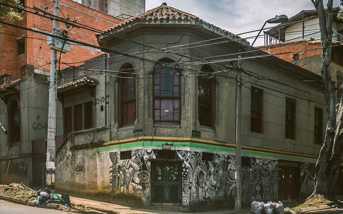

Bar El Viejo Baúl
El lugar de los bohemios
Un lugar dedicado a los tangos, música social y conversaciones de amigos. El 4 de abril de 1990, disparos de presuntos policías, acabaron con la vida de seis personas que se encontraban en el Bar El Viejo Baúl. en los asesinatos fueron pocas las investigaciones realizadas, pero se habla de dos camionetas de las que descendieron un grupo de hombres armados quienes entraron al bar disparando contra todos los presentes. Aseguran familiares cercanos al crimen que la policía estuvo involucrada y consideran el hecho como un “Crimen de Estado” contra académicos, debido a que nunca se intentó avanzar en las investigaciones, a la fecha el crimen continúa impune y la fachada del ya abandonado Viejo Baúl se desmorona con el paso del tiempo.